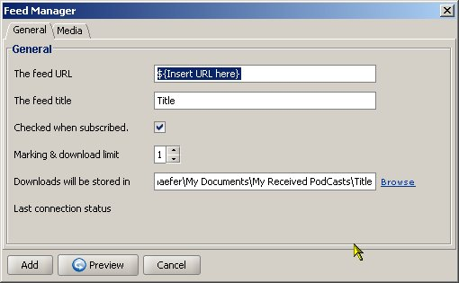
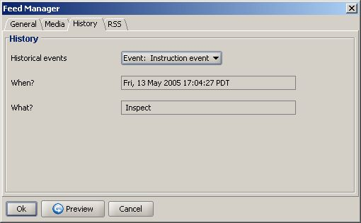
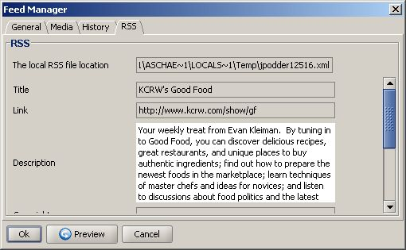

In order to download podcasts you need to add a feed to your personal feed list. In addition jPodder allows you to customize your feed and its podcasts in many ways. The most import feature is the tag rewriting for the podcasts. As you maybe have noticed the MP3 audio files contain a set of tags like Artist, Genre etc that are set by the producer. But sometimes they are not what you would like them to be like, for example, the Genre is set to something like 'vocal', 'other' etc instead of 'Podcast'. In case you have regular music MP3 files you end up with problems keeping them appart. With the tag rewriting jPodder can help you adjust these tags to whatever value you like so that they fit your needs the best.
The difference between adding a new and editing an existing feed is that in the dialog for addition a feed you only have the tab General and Media available whereas when you edit a feed you also see the tabs History and RSS. When you preview a new and valid feed the tab RSS is made visible, too.
You can add a new feed by either using the jPodder's Feed menu, the feed context menu Add Feed entry or by double-clicking on a empty row in the feed table (there are always two empty rows at the bottom of the feed table). Editing an existing feed is done by using the jPodder's Feed menu, the feed context menu Edit Feed entry or by double clicking the feed in question.
The Feed Manager dialog has a default button on the Add when adding a new feed or on the Ok when editing a feed adding feed to the list or accepting the changes and closing the dialog. You can even when not added yet. This way you can read the feed data in the RSS tab. If the feed URL is invalid you can still change it or discard the feed entirely by clicking on the cancel button. preview the feed
The Feed Manager dialog for adding a new feed looks like this: 
The General tab contains these fields:
| The feed URL | The is set here |
| The feed title | Title of the Feed which is normally taken from the feed during a preview but can be changed here at any time |
| Checked when subscribed | Uncheck if the feed should be kept inactive (no inspection or downloading podcasts) |
| Marking & download limit | The maximum numbers of marked enclosures per feed and therefore the maximum number of downloads for this feed per download cycle |
| Downloads will be stored in | The directory where a downloaded podcast will placed in |
The Media tab contains these fields:
| Select | Link allowing you to to be rewriten. These tags are then listed below. |
| Name | Name of the Tag to be rewritten. Is set when you select a tag in the select link above |
| Value | New value of the tag set when rewritten. You can enter the value you like and even add values from other tags. An easy what to do so is to enter a '$' character and then select a tag from the list. You can add as many placeholders as you like. |

The History tab contains these fields:
| Historical events | All the events that have occurred with this feed |
| When? | Date and Time when the event happened |
| What? | The action that was performed with that event |

The RSS tab contains these fields:
| The local RSS file location | The location and file name of the local RSS document |
| Title | Original Title of the Feed |
| Link | Original Link of the Feed |
| Description | Description provided by the Feed |
| ... | futher attributes of the feed less commonly used |